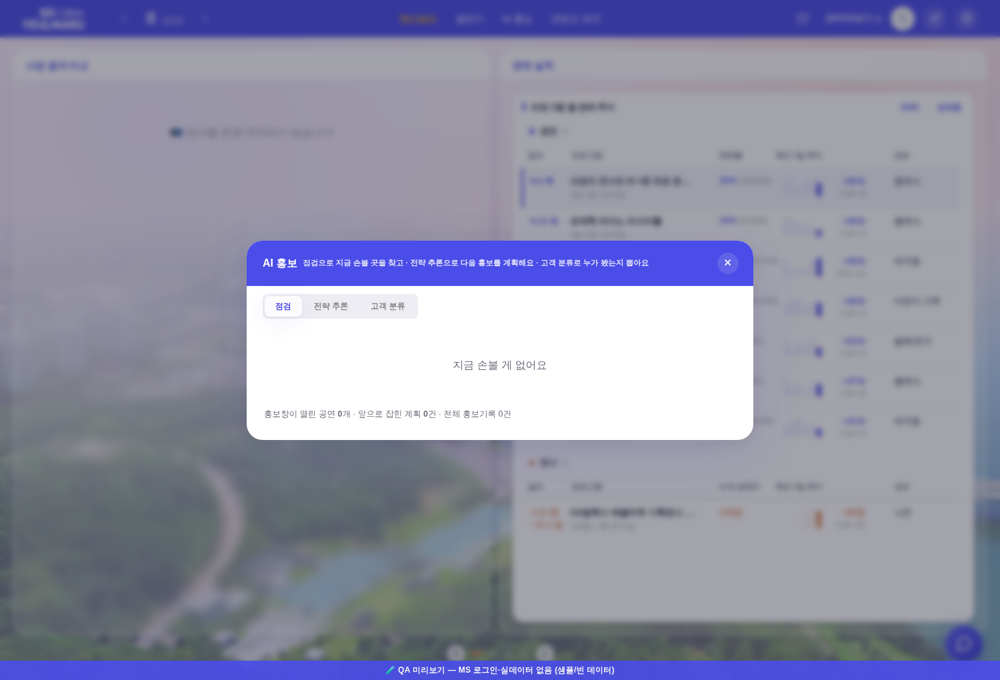
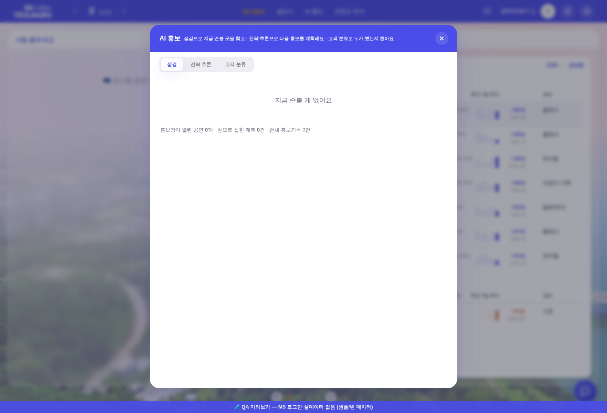
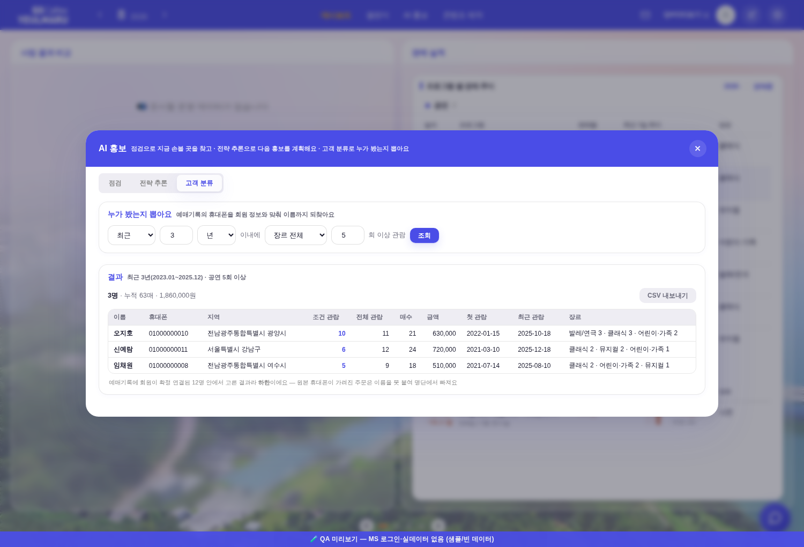
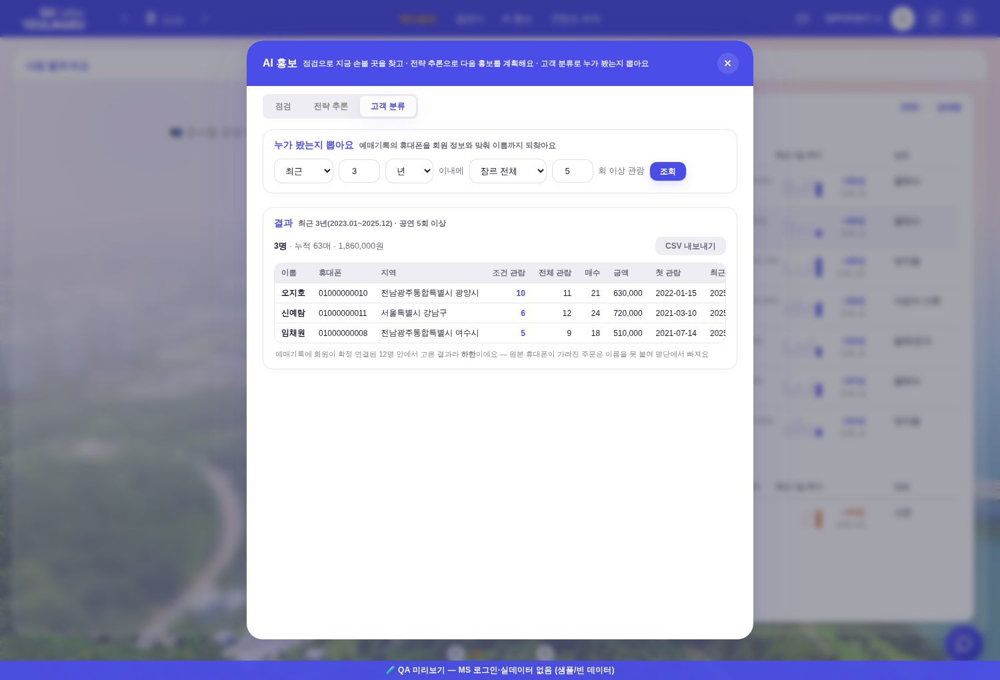
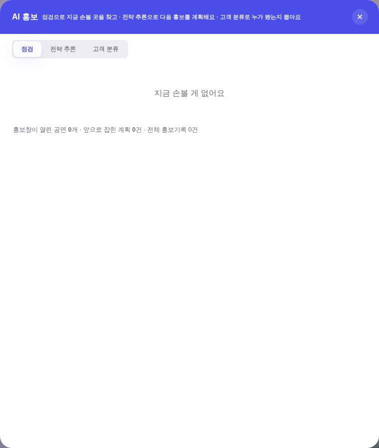
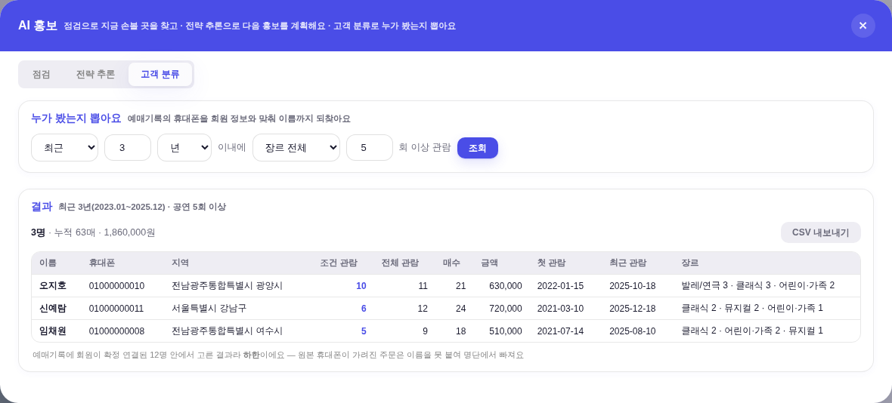
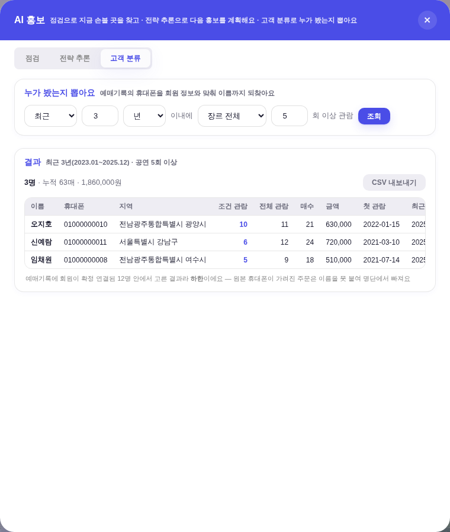

tools/qa_mock_ops.mjs)뿐 = 실데이터·PII 미접촉(명단의 이름·번호는 전부 지어낸 값) · 프로브 tools/scratch/probe_pcsize.mjs.



| 탭 / 상태 | 전 (폭×높이) | 후 (폭×높이) | 비고 |
|---|---|---|---|
| 점검 | 760 × 299 | 760 × 897.59 | 기준 탭 |
| 전략 추론 | 760 × 399.78 | 760 × 897.59 | 전 = 높이 +100.78px 튐 |
| 고객 분류 | 1180 × 270 | 760 × 897.59 | 전 = 폭 +420px · 높이 −29px 튐 |
| 고객 분류(명단 조회 후) | 1180 × 534 | 760 × 897.59 | 전 = 조회만 눌러도 창이 또 +264px |
| 점검(탭 왕복 후) | 760 × 299 | 760 × 897.59 | 왕복 후에도 동일 |
| 가짓수 | 폭 2가지 · 높이 4가지 | 폭 1가지 · 높이 1가지 | 계약 = 「항상 동일」 |
| 자리 | 전 | 후 |
|---|---|---|
| 모달 셸 | width:min(760px,94vw); max-height:88vh — 폭은 탭이 갈아끼우고 높이는 내용대로 흐름 | width:min(760px,94vw); height:88vh; max-height:88vh — 점검이 이미 쓰던 두 값을 상한이 아니라 고정값으로 승격 |
| 상수 | _PC_W={base:'min(760px,94vw)', seg:'min(1180px,96vw)'} | _PC_BOX={w:'min(760px,94vw)', h:'88vh'} — 창 크기 SSOT 한 곳 |
탭 전환 _pcTab | m.style.width=(t==='seg')?_PC_W.seg:_PC_W.base — 탭이 창을 바꿨다 | 그 줄 삭제 — 뷰 display 토글만. 탭이 크기를 바꾸는 코드가 없다 |
min(760px,94vw)·88vh) 다 이 모달이 원래 쓰던 값이다..pb-modal(홍보 신청·확인)과 같은 형태 = width/height 고정 + overflow:hidden + flex 세로 + 본문만 스크롤 — 새 형태를 만들지 않았다(기틀 규칙 3).
| 조건 | 창 | 본문 스크롤 | 판정 |
|---|---|---|---|
| 내용이 창보다 짧을 때 | 760 × 897.59 | 없음 | 창 고정 |
| 내용이 창보다 길 때(+1600px) | 760 × 897.59 | 생김(본문 780.59 안에서) | 창 고정 · 넘친 만큼 스크롤 |
| 좁은 화면 390×844(모바일) | 358.8 × 742.72 | 넘칠 때만 | 94vw·88vh 그대로 · 여기서도 1가지 |


overflow:auto 상자 안의 min-width:860px이라 레이아웃은 안 깨지고 가로로 밀린다 — 운영자 답 「넘어가면 스크롤」 그대로._PC_BOX.w 한 줄만 바꾸면 된다.| 게이트 | 결과 |
|---|---|
check_design.py | PASS — raw hex index 1545/1545 · :root 2/0 · 신규 0 |
check_modal_head.py · smoke_modal_head.mjs | PASS — 모달 61개 머리줄 정본 · 36개 실측 전건 동일 |
smoke_component_parity.mjs | PASS — 55종 · 갈린 것 1종(baseline 이내 · 증가 0) |
smoke_layout.mjs · smoke_bizchart.mjs · smoke_wizard_open.mjs · check_exchart.py · check_refs.py · build_annual_yr.mjs | PASS |
.active.prog-tab 2갈래(rgb(136,136,136)·배경 투명 · 「1. 카드 제작」 모달)로 FAIL했다가 이어진 3회 연속 PASS. 이번 변경은 .prog-tab도 카드 제작 모달도 건드리지 않았고, 변경 전 main에서도 PASS다 → 이번 변경이 만든 드리프트가 아니라 그 스모크의 흔들림 1건으로 본다(그 게이트의 등재 문구 「3회 연속 동일 · 흔들림 0」과 어긋나는 관측이라 남긴다).